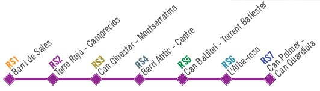

Tornar
Recomanacions

 Utilitza un calçat i roba còmodes.
Utilitza un calçat i roba còmodes.
Durant la passejada, hauries d'anar a una velocitat agradable que et permeti parlar.
Després de menjar evita fer activitats intenses, ja que poden interferir en la correcta digestió dels aliments.
Cal que respectis les normes de seguretat viària.
Recorda portar aigua i anar bevent durant el recorregut, sobretot quan fa calor.
No t'oblidis de respectar l'entorn
Evita les hores de màxima insolació. Camina sota l'ombra, porta barret, ulleres de sol i protecció solar.
 Anima a familiars o amics perquè caminin amb tú.
Anima a familiars o amics perquè caminin amb tú.
Recorda portar rellotge durant la caminada.